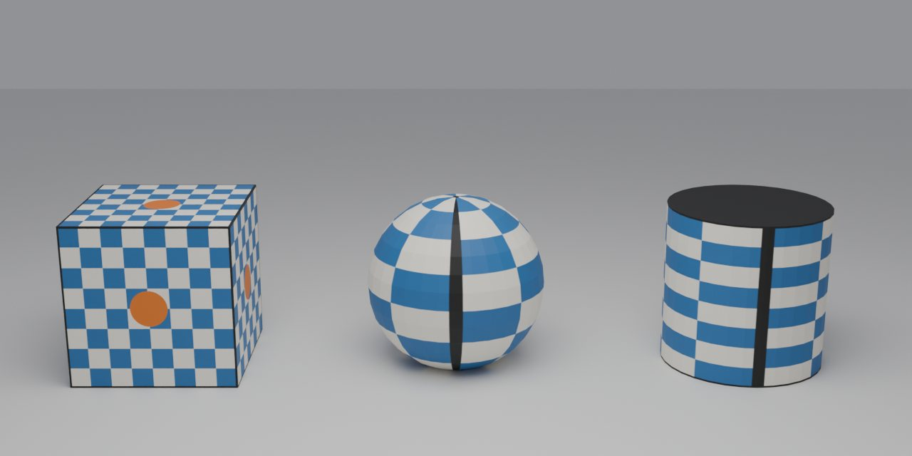

Bonus lesson
Image Texture and Projection
In Lesson 9 you gave the mug a plain color. An image can give it a pattern or a label instead. In the Shader Editor, the Image Texture node reads an image and outputs its color, and you plug that color into the Base Color of the Principled BSDF.
1. Connect the node
Add an Image Texture node from the Add menu under Texture and choose your picture in its Image field. Connect the node's Color output to the Base Color input of the shader. The manual says the node's Vector input is usually connected to a Texture Coordinate node. If you leave it unconnected, Blender uses the object's active UV map.
2. Choose a projection
Projection decides how a flat image is placed on a 3D shape. The manual lists four:
Flat places the image in a unit square and is normally used together with UV maps. Box projects the image onto each side of a cube and is common for boxy objects. Sphere wraps the image around a sphere, which suits planets and organic shapes. Tube wraps it around a cylinder, which suits a label on a bottle but not the top or bottom of an object.

3. Interpolation and Extension
Interpolation sets how the image is scaled. Linear is regular quality, Cubic is smoother, and Closest uses no smoothing, which the manual says is useful for pixel art. Extension decides what happens outside the image: Repeat tiles it, Extend stretches the edge pixels, Clip makes everything outside transparent black, and Mirror flips it back and forth.
Read the manual page on the Image Texture node.
Exercise
Pick a simple picture you made yourself or one you have the right to use. Put it on the mug body with Tube projection, then switch Extension from Repeat to Clip and compare. Use only images you are allowed to use.